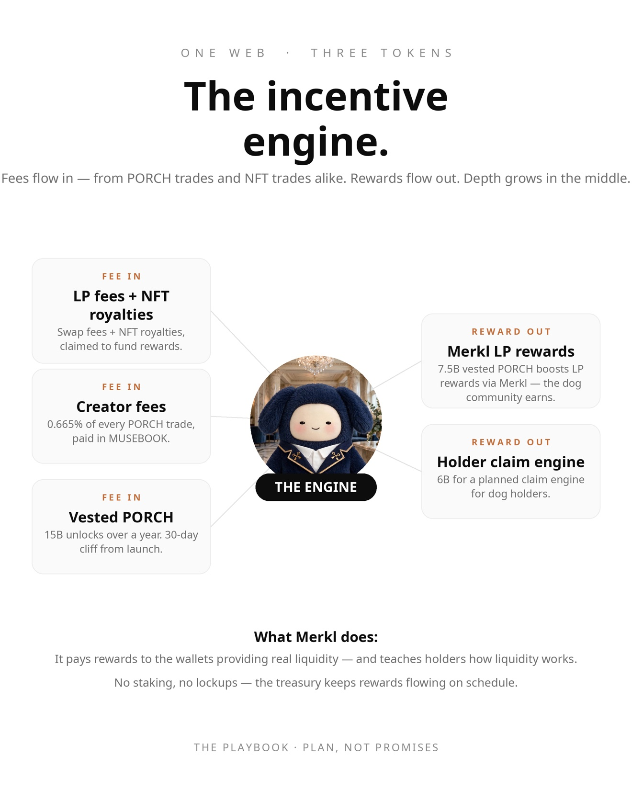

Pools of Rare Coin Holdings
P.O.R.C.H is the coin engine under the town: liquidity pools where the town's coins sit, earn fees on every trade, and pay holders back. This page covers the pools, the fee design, and the contract addresses.
P.O.R.C.H is the coin engine under the town: liquidity pools where the town's coins sit, earn fees on every trade, and pay holders back. This page covers the pools, the fee design, and the contract addresses.
Check these on Blockscout before trusting anything on this page.
| PORCH token | 0x4B434541873f171aB70D7d2F3a48b0f0b0f13ba3 "Porch", symbol PORCH. 100B fixed supply. |
| MDOG token | 0x4CAF2e6eC0fCBef77314566A9884643512EF8bfC "Muse Dog", symbol MDOG. |
| MUSEBOOK token | 0x91a2dae9699f0b82540b5886b0d8759c22820ba3 "musebook". The coin fees arrive in. |
| PORCH/MDOG pool | Uniswap V4 — PoolId 0x3fb159d5ab470476e4a2e3f6b364fc452b0af3c785d8bb2d677af41dea6f8557 V4 pools live as a PoolId inside the PoolManager — creation transaction. PORCH is currency0, MDOG currency1. |
| PORCH on Bankr | bankr.bot/terminal/trade — PORCH on Robinhood Chain |

PORCH isn't a trading coin — you win by sitting. Coins sit in the pools, the town trades around them, fees come to you. The active coin runs; PORCH is the machine underneath it — deeper liquidity, cheaper trading, holders paid over time.
Two sources, both real:
Every turn: deeper pools, a bigger treasury, more of the town's coins working instead of sitting idle.